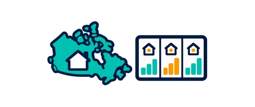
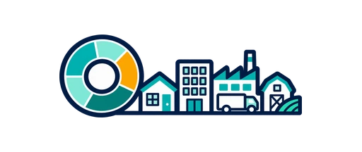
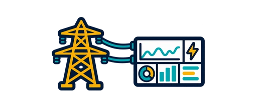
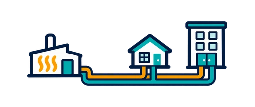

Retrofit Explorer
1.45M real Canadian home-energy retrofits — what homes like yours did, and what their audits say it saved.

Retrofit Insights
The national picture behind the same 1.45M retrofits — leaderboards, climate & equity lenses, what actually works.
New Homes Explorer
How efficient brand-new construction actually is — as-designed plans vs. blower-door-tested as-built homes.

CEUD Explorer
NRCan's Comprehensive Energy Use Database, browsable — where Canada's energy actually goes, sector by sector.
Construction Tracker
Permits, housing starts and construction investment — national, provincial and metro, refreshed monthly.
Permits Explorer
Nine cities' own permit desks — where building actually happens, block by block, and who is doing it.

Grid Dashboard
What's powering the grid right now — Ontario & Alberta generation mix, and why "average" and "marginal" emissions disagree.

District Energy Explorer
Canada's 238 thermal networks — what district energy is, how the generations differ, and every system on the map.
Ottawa Geothermal Map
Ground-source heat pump screening for Ottawa — conductivity from 55k water wells, drilling difficulty, grid capacity.
Heat Pump Explorer
An hour-by-hour simulation: your home, your heating, real cold-climate equipment and your province's real grid.
Get in touch
Questions about a tool, the methods, or energy-audit work? Your message goes to the site author; your email is used only to reply.
About the data
Every tool here follows the same pattern: an offline Python pipeline turns a public government (or utility) dataset into compact JSON, and a single self-contained HTML page renders it in your browser — no server, no account, no tracking beyond standard page analytics. Values are modelled or reported figures from the original source, not independently measured; each tool states its own caveats on-page.
Built by Ottawa Visuals, source on GitHub. Website, data pipelines and Python scripts were developed using Claude AI.